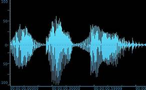
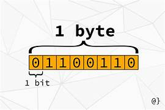

il computer lavora con solo informazioni con i numeri, quindi anche i numeri alfabetici devono essere espressi in codici numerici.
per rappresentare una lettera si ha bisogno di 7 bit come ad esempio:
A= 1000001;
B=1000010;
C=1000011; ecc...
Il codice ascii nasce tra gli anni 50 e 60 dagli americani e i caratteri sono 128.
In Italia invece i caratteri sono di meno ed è molto più semplice codificarli, in altri paesi invece esistono codifiche di 8 bit e quindi sono molti più caratteri e sono più complessi da codificare.
Le codifiche audio (o formati audio) sono metodi per rappresentare digitalmente i segnali sonori. Servono a trasformare un suono analogico (come una voce o una musica) in un formato digitale che possa essere salvato, trasmesso, o elaborato da dispositivi elettronici come computer, smartphone o lettori multimediali.
Le codifiche audio si suddividono in base a due criteri principali:
Conservano tutti i dati originali del suono.
Qualità altissima, ma occupano molto spazio.
Esempi:
PCM (Pulse Code Modulation) → usato nei CD audio
WAV (Waveform Audio File Format)
WAV (Waveform Audio File Format)
🔸 Compresse senza perdita di dati (lossless) Compressione senza perdita di qualità, ma con file più piccoli rispetto a quelli non compressi.
Esempi:
FLAC (Free Lossless Audio Codec)
ALAC (Apple Lossless Audio Codec)
APE (Monkey's Audio)
🔸 Compresse con perdita di dati (lossy) Eliminano alcune informazioni sonore per ridurre le dimensioni del file.
Qualità leggermente ridotta, ma molto più efficienti.
Esempi:
MP3
AAC (Advanced Audio Coding)
OGG Vorbis
WMA (Windows Media Audio)
Oltre al tipo di compressione, i file audio possono essere incapsulati in formati contenitore, che possono includere anche metadati, copertine, tracce multiple, ecc.
Esempi di contenitori:
MP4 (che può contenere audio AAC)
MKV (spesso usato per video ma può contenere anche audio)
M4A (contenitore per AAC o ALAC)
le codifiche delle immagini sono utilizzate per trasformare le immagini in dati digitali.
per codificare un'immagine si usa la bitmap, una mappa composta da punti, ed ogni unto corrisponde ad un pixel.
per avere le tonalità bisogna avere un tot. preciso di bit:
1 bit = tonalita bianco e nero
8 bit = tonalita di grigio
16 bit = radiografie
24 bit = colori
48 bit= colori A
il pixel sono un elemento fondamentale per la creazione di immagini e video. per avere il colore bisogna avere determinati bit che sono l'unità di misura del contenuto di informazione di un messaggio
VARI TIPI DI UNITA DI MISURA:
1. bit
2. byte
3: kilobyte
4: megabyte
5: gigabyte
6: terabyte
7: petabyte
8: exabyte
9: zettabyte
10: yottabyte
11: brontobyte
Un file video digitale è una sequenza di immagini, contenente del suono (che può essere sincronizzato o meno con le immagini). La codifica video è il processo di conversione di file video in formati che possono essere facilmente e accuratamente memorizzati, trasmessi e visualizzati.